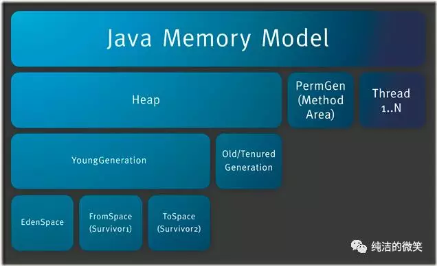
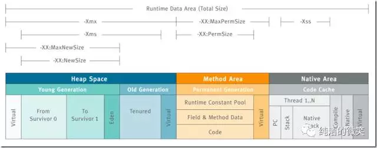
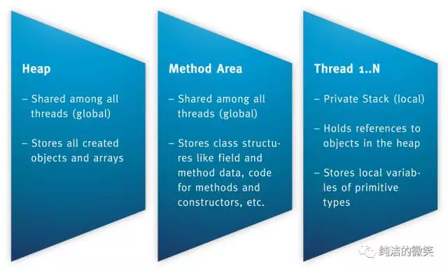
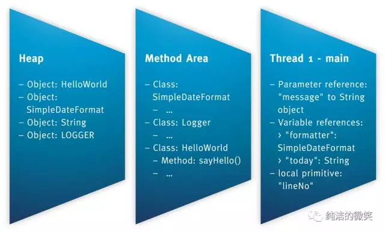
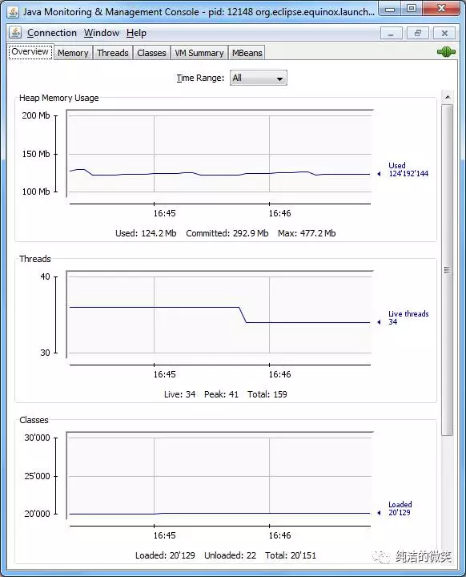

所有的Java开发人员可能会遇到这样的困惑？我该为堆内存设置多大空间呢？OutOfMemoryError的异常到底涉及到运行时数据的哪块区域？该怎么解决呢？其实如果你经常解决服务器性能问题，那么这些问题就会变的非常常见，了解JVM内存也是为了服务器出现性能问题的时候可以快速的了解那块的内存区域出现问题，以便于快速的解决生产故障。
先看一张图，这张图能很清晰的说明JVM内存结构布局。

JVM内存结构主要有三大块：堆内存、方法区和栈。堆内存是JVM中最大的一块由年轻代和老年代组成，而年轻代内存又被分成三部分，Eden空间、From Survivor空间、To Survivor空间,默认情况下年轻代按照8:1:1的比例来分配；
方法区存储类信息、常量、静态变量等数据，是线程共享的区域，为与Java堆区分，方法区还有一个别名Non-Heap(非堆)；栈又分为java虚拟机栈和本地方法栈主要用于方法的执行。
在通过一张图来了解如何通过参数来控制各区域的内存大小

控制参数
没有直接设置老年代的参数，但是可以设置堆空间大小和新生代空间大小两个参数来间接控制。
老年代空间大小=堆空间大小-年轻代大空间大小
从更高的一个维度再次来看JVM和系统调用之间的关系
方法区和对是所有线程共享的内存区域；而java栈、本地方法栈和程序员计数器是运行是线程私有的内存区域。
下面我们详细介绍每个区域的作用
Java堆（Heap）
对于大多数应用来说，Java堆（Java Heap）是Java虚拟机所管理的内存中最大的一块。Java堆是被所有线程共享的一块内存区域，在虚拟机启动时创建。此内存区域的唯一目的就是存放对象实例，几乎所有的对象实例都在这里分配内存。
Java堆是垃圾收集器管理的主要区域，因此很多时候也被称做“GC堆”。如果从内存回收的角度看，由于现在收集器基本都是采用的分代收集算法，所以Java堆中还可以细分为：新生代和老年代；再细致一点的有Eden空间、From Survivor空间、To Survivor空间等。
根据Java虚拟机规范的规定，Java堆可以处于物理上不连续的内存空间中，只要逻辑上是连续的即可，就像我们的磁盘空间一样。在实现时，既可以实现成固定大小的，也可以是可扩展的，不过当前主流的虚拟机都是按照可扩展来实现的（通过-Xmx和-Xms控制）。
如果在堆中没有内存完成实例分配，并且堆也无法再扩展时，将会抛出OutOfMemoryError异常。
方法区（Method Area）
方法区（Method Area）与Java堆一样，是各个线程共享的内存区域，它用于存储已被虚拟机加载的类信息、常量、静态变量、即时编译器编译后的代码等数据。虽然Java虚拟机规范把方法区描述为堆的一个逻辑部分，但是它却有一个别名叫做Non-Heap（非堆），目的应该是与Java堆区分开来。
对于习惯在HotSpot虚拟机上开发和部署程序的开发者来说，很多人愿意把方法区称为“永久代”（Permanent Generation），本质上两者并不等价，仅仅是因为HotSpot虚拟机的设计团队选择把GC分代收集扩展至方法区，或者说使用永久代来实现方法区而已。
Java虚拟机规范对这个区域的限制非常宽松，除了和Java堆一样不需要连续的内存和可以选择固定大小或者可扩展外，还可以选择不实现垃圾收集。相对而言，垃圾收集行为在这个区域是比较少出现的，但并非数据进入了方法区就如永久代的名字一样“永久”存在了。这个区域的内存回收目标主要是针对常量池的回收和对类型的卸载，一般来说这个区域的回收“成绩”比较难以令人满意，尤其是类型的卸载，条件相当苛刻，但是这部分区域的回收确实是有必要的。
根据Java虚拟机规范的规定，当方法区无法满足内存分配需求时，将抛出OutOfMemoryError异常。
方法区有时被称为持久代（PermGen）。

所有的对象在实例化后的整个运行周期内，都被存放在堆内存中。堆内存又被划分成不同的部分：伊甸区(Eden)，幸存者区域(Survivor Sapce)，老年代（Old Generation Space）。
方法的执行都是伴随着线程的。原始类型的本地变量以及引用都存放在线程栈中。而引用关联的对象比如String，都存在在堆中。为了更好的理解上面这段话，我们可以看一个例子：
import java.text.SimpleDateFormat;
import org.apache.log4j.Logger;
public class HelloWorld {
private static Logger LOGGER = Logger.getLogger(HelloWorld.class.getName());
public void sayHello(String message) {
SimpleDateFormat formatter = new SimpleDateFormat("dd.MM.YYYY");
String today = formatter.format(new Date());
LOGGER.info(today + ": " + message);
这段程序的数据在内存中的存放如下：

通过JConsole工具可以查看运行中的Java程序（比如Eclipse）的一些信息：堆内存的分配，线程的数量以及加载的类的个数；

程序计数器（Program Counter Register）
程序计数器（Program Counter Register）是一块较小的内存空间，它的作用可以看做是当前线程所执行的字节码的行号指示器。在虚拟机的概念模型里（仅是概念模型，各种虚拟机可能会通过一些更高效的方式去实现），字节码解释器工作时就是通过改变这个计数器的值来选取下一条需要执行的字节码指令，分支、循环、跳转、异常处理、线程恢复等基础功能都需要依赖这个计数器来完成。
由于Java虚拟机的多线程是通过线程轮流切换并分配处理器执行时间的方式来实现的，在任何一个确定的时刻，一个处理器（对于多核处理器来说是一个内核）只会执行一条线程中的指令。因此，为了线程切换后能恢复到正确的执行位置，每条线程都需要有一个独立的程序计数器，各条线程之间的计数器互不影响，独立存储，我们称这类内存区域为“线程私有”的内存。
如果线程正在执行的是一个Java方法，这个计数器记录的是正在执行的虚拟机字节码指令的地址；如果正在执行的是Natvie方法，这个计数器值则为空（Undefined）。
此内存区域是唯一一个在Java虚拟机规范中没有规定任何OutOfMemoryError情况的区域。
JVM栈（JVM Stacks）
与程序计数器一样，Java虚拟机栈（Java Virtual Machine Stacks）也是线程私有的，它的生命周期与线程相同。虚拟机栈描述的是Java方法执行的内存模型：每个方法被执行的时候都会同时创建一个栈帧（Stack Frame）用于存储局部变量表、操作栈、动态链接、方法出口等信息。每一个方法被调用直至执行完成的过程，就对应着一个栈帧在虚拟机栈中从入栈到出栈的过程。
局部变量表存放了编译期可知的各种基本数据类型（boolean、byte、char、short、int、float、long、double）、对象引用（reference类型，它不等同于对象本身，根据不同的虚拟机实现，它可能是一个指向对象起始地址的引用指针，也可能指向一个代表对象的句柄或者其他与此对象相关的位置）和returnAddress类型（指向了一条字节码指令的地址）。
其中64位长度的long和double类型的数据会占用2个局部变量空间（Slot），其余的数据类型只占用1个。局部变量表所需的内存空间在编译期间完成分配，当进入一个方法时，这个方法需要在帧中分配多大的局部变量空间是完全确定的，在方法运行期间不会改变局部变量表的大小。
在Java虚拟机规范中，对这个区域规定了两种异常状况：如果线程请求的栈深度大于虚拟机所允许的深度，将抛出StackOverflowError异常；如果虚拟机栈可以动态扩展（当前大部分的Java虚拟机都可动态扩展，只不过Java虚拟机规范中也允许固定长度的虚拟机栈），当扩展时无法申请到足够的内存时会抛出OutOfMemoryError异常。
本地方法栈（Native Method Stacks）
本地方法栈（Native Method Stacks）与虚拟机栈所发挥的作用是非常相似的，其区别不过是虚拟机栈为虚拟机执行Java方法（也就是字节码）服务，而本地方法栈则是为虚拟机使用到的Native方法服务。虚拟机规范中对本地方法栈中的方法使用的语言、使用方式与数据结构并没有强制规定，因此具体的虚拟机可以自由实现它。甚至有的虚拟机（譬如Sun HotSpot虚拟机）直接就把本地方法栈和虚拟机栈合二为一。与虚拟机栈一样，本地方法栈区域也会抛出StackOverflowError和OutOfMemoryError异常。
哪儿的OutOfMemoryError
对内存结构清晰的认识同样可以帮助理解不同OutOfMemoryErrors：
Exception in thread “main”: java.lang.OutOfMemoryError: Java heap space
原因：对象不能被分配到堆内存中
Exception in thread “main”: java.lang.OutOfMemoryError: PermGen space
原因：类或者方法不能被加载到老年代。它可能出现在一个程序加载很多类的时候，比如引用了很多第三方的库；
Exception in thread “main”: java.lang.OutOfMemoryError: Requested array size exceeds VM limit
原因：创建的数组大于堆内存的空间
Exception in thread “main”: java.lang.OutOfMemoryError: request <size> bytes for <reason>. Out of swap space?
原因：分配本地分配失败。JNI、本地库或者Java虚拟机都会从本地堆中分配内存空间。
Exception in thread “main”: java.lang.OutOfMemoryError: <reason> <stack trace>（Native method）
原因：同样是本地方法内存分配失败，只不过是JNI或者本地方法或者Java虚拟机发现
维基百科对JVM的介绍
Overview of a Java virtual machine (JVM) architecture based on The Java Virtual Machine Specification Java SE 7 Edition
A Java virtual machine (JVM) is an abstract computing machine that enables a computer to run a Java program. There are three notions of the JVM: specification, implementation, and instance. The specification is a document that formally describes what is required of a JVM implementation. Having a single specification ensures all implementations are interoperable. A JVM implementation is a computer program that meets the requirements of the JVM specification. An instance of a JVM is an implementation running in a process that executes a computer program compiled into Java bytecode.
Java Runtime Environment (JRE) is a software package that contains what is required to run a Java program. It includes a Java Virtual Machine implementation together with an implementation of the Java Class Library. The Oracle Corporation, which owns the Java trademark, distributes a Java Runtime environment with their Java Virtual Machine called HotSpot.
Java Development Kit (JDK) is a superset of a JRE and contains tools for Java programmers, e.g. a javaccompiler. The Java Development Kit is provided free of charge either by Oracle Corporation directly, or by the OpenJDK open source project, which is governed by Oracle.
推荐阅读：